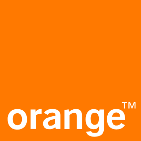
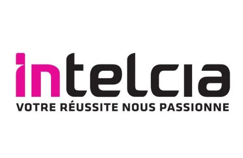

Data Analyst · Business Intelligence · Machine Learning
Maîtrisant l'intégralité de la chaîne de la donnée — de la modélisation SQL à la mise en production de modèles prédictifs — j'accompagne les organisations avec une approche à la fois technique et orientée métier.


Diplômée d'un Master en Business Intelligence & Big Data et d'une formation Data Analyst au CFA Orange en partenariat avec OpenClassrooms, je maîtrise l'intégralité de la chaîne de valorisation de la donnée : collecte, modélisation, analyse, visualisation et mise en production.
Mon parcours, entre le Sénégal et la France, m'a confrontée à des environnements variés — secteur public, entrepreneuriat, centre de relation client, grand groupe international — ce qui m'a permis de développer une adaptabilité rare et une compréhension fine des enjeux métier dans de nombreux secteurs.
Curieuse, rigoureuse et passionnée par la donnée et l'intelligence artificielle, je m'engage à produire des analyses claires, des visualisations impactantes et des recommandations actionnables.
Un parcours riche, entre la France et le Sénégal, dans des environnements variés et exigeants.
Conception de tableaux de bord Power BI pour le pilotage des sites réseau 4G/5G (sites neufs et réaménagements). Automatisation de processus métier via Python : remplacement de macros Excel, envoi automatique de rapports hebdomadaires. Exploitation et lecture de la base de données entreprise.
Accompagnement de jeunes diplômés dans leur orientation professionnelle. Gestion de bases de données et conception de tableaux de bord Power BI pour le suivi des activités et des indicateurs de performance.
Développement front-end sur la plateforme du Fichier Unifié des Données Personnelles de l'État (FUDPE). Contribution à la modernisation des outils numériques du secteur public sénégalais.
Support technique, traitement d'incidents, assistance clientèle et service après-vente dans le cadre de la campagne SFR. Première expérience dans l'univers des télécommunications.
Une maîtrise complète de la chaîne de la donnée, des langages de programmation aux outils de visualisation et de machine learning.
Sept projets documentés, couvrant des secteurs variés, avec des résultats mesurables et des livrables concrets.
FAO — Nations Unies
Analyse de la sous-nutrition mondiale en 2017 : quantification du paradoxe alimentaire, cartographie des pays prioritaires, étude du cas Thaïlande.
Sanitoral — Groupe international
Outil de pilotage complet (coûts, délais, livrables) pour un groupe international de soins bucco-dentaires. 6 tables modélisées, mesures DAX, segments synchronisés.
Librairie Lapage
Analyse de 2 ans de données e-commerce : KPIs, profils clients, tests statistiques rigoureux. Loi de Pareto vérifiée sur les ventes.
Laplace Immo
Conception d'une base relationnelle normalisée (DVF, INSEE, data.gouv), 12 requêtes d'analyse du marché, conformité RGPD intégrée dès la conception.
ONCFM
Développement et mise en production d'un algorithme de classification atteignant 99,3% de précision et un AUC de 1,000. Script predict.py sérialisé, utilisable en production.
Orange France — Déploiement Mobile
Pipeline Python complet : extraction SQL depuis la base EDR , filtrage, génération automatique de rapports Excel 4G/5G et envoi aux équipes.
Orange France — Pôle Travaux
Tableau de bord Power BI interactif pour le pilotage des opérations entre Go Travaux et MEST : suivi des prérequis, performance des aménageurs, temps de coupure, taux d'avancement.
Dans le cadre d'une mission pour la FAO, l'objectif était d'analyser les données mondiales de sous-nutrition de 2017 afin d'identifier les pays prioritaires, de quantifier le paradoxe alimentaire mondial et de proposer des recommandations ciblées.
Sanitoral, groupe international de soins bucco-dentaires, avait besoin d'un outil de pilotage centralisé pour suivre en temps réel les coûts, délais et livrables sur 4 régions et 40+ pays.
La Librairie Lapage souhaitait mieux comprendre ses clients en ligne et identifier les leviers de fidélisation à partir de 2 ans de données e-commerce.
Laplace Immo avait besoin d'une base de données relationnelle structurée pour analyser le marché immobilier français, en intégrant plusieurs sources de données publiques avec une conformité RGPD native.
L'ONCFM avait besoin d'un algorithme capable de détecter automatiquement les faux billets de banque, avec un script Python directement utilisable par les équipes métier en production.
Dans le cadre du déploiement réseau 4G/5G d'Orange France, les équipes avaient besoin d'une veille hebdomadaire sur les autorisations ANFR. Ce processus était réalisé manuellement via des macros Excel, source d'erreurs et chronophage. L'objectif était d'automatiser entièrement ce pipeline.
psycopg2, identifiants via variables d'environnementL'équipe Production Réaménagement du déploiement mobile de Orange gérait le suivi des opérations entre le Go Travaux (GOT) et la Mise En Service Technique(MEST) via un fichier Excel partagé sur SharePoint. Ce fichier ne permettait pas une prise de décision rapide : pas de visualisation des prérequis manquants, pas de suivi des performances par aménageur, pas d'indicateurs de temps de coupure. L'objectif était de concevoir un tableau de bord Power BI interactif répondant aux besoins des chefs de projet.
Grâce à la diversité de mes projets et expériences, je maîtrise le vocabulaire et les problématiques de plusieurs secteurs métier.
Un socle académique solide, construit progressivement de l'informatique générale à la data science avancée.
Vous avez un projet data, une opportunité ou simplement envie d'échanger ? Je suis disponible et à l'écoute.
Alternante chez Orange, je reste ouverte aux opportunités de collaboration, aux projets data innovants et aux échanges professionnels enrichissants.